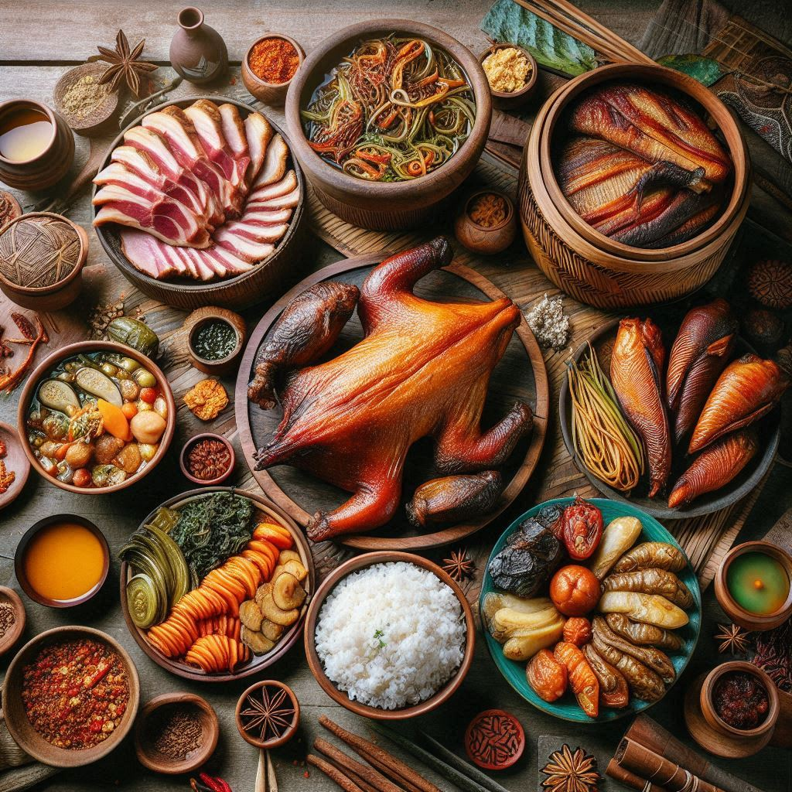
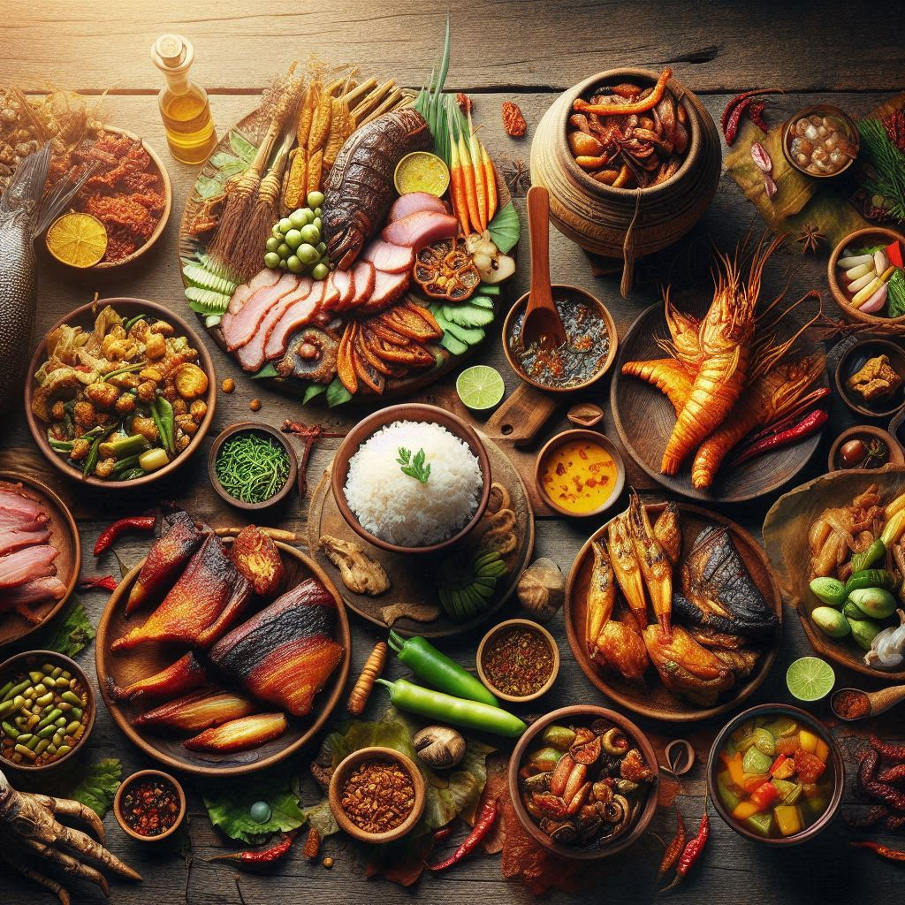

The cuisine of Nagaland is as diverse and rich as its culture, reflecting the various Naga
tribes, each with its own unique cooking styles and ingredients. Naga food is typically simple, hearty, and rich
in flavors, often characterized by spices, fermented foods,
and smoked meats. The traditional food is deeply connected to the agricultural
lifestyle of the Naga people, as they rely heavily on locally sourced ingredients like
rice, vegetables, and meat from
hunting or farming. Here are some of the key components of Naga cuisine:
1. Rice
Rice is a staple food in Nagaland and is consumed with most meals. It is typically
served with a variety of vegetables, meats, and
chutneys. Rice is often accompanied by stews or curries made from locally
grown produce.
In some regions, sticky rice or fermented rice is also commonly
consumed.
2. Meat
Meat plays a central role in Naga cuisine, especially in the form of
pork, chicken, goat, and beef. The
Naga people are known for their love of smoked meats, which are often dried or
cured for preservation.
Wild game such as deer, pigeon, and
wild boar is also hunted and forms part of the traditional diet in rural
areas.
Meat dishes are often prepared using smoking,
boiling, or grilling methods, with
spices and herbs to enhance flavor.
3. Traditional Dishes
Here are some of the most popular and widely known dishes in Naga cuisine:
a. Smoked Pork with Bamboo Shoot (Smoked Pork with Bamboo Shoot Stew)
This is a classic Naga dish where pork is slow-cooked with fermented
bamboo shoots, which gives it a distinctive flavor. Bamboo
shoots add a unique tangy taste, and the pork is typically
smoked to enhance its richness. It is commonly served with steamed rice.
b. Eromba
Eromba is a traditional dish made by mixing boiled
vegetables (such as sweet potatoes,
potatoes, and pumpkin) with
fermented fish, chili, and local
herbs. It is usually eaten with rice and is highly valued for its unique spicy
and tangy taste.
c. Akhuni (Fermented Soybean)
Akhuni is a fermented soybean paste that is a common ingredient in Naga cooking. It
has a strong, pungent flavor and is used to add depth to stews, curries, and chutneys. It is often
combined with meats, vegetables, and
chili to create flavorful dishes.
d. Fish Stew (Fish in Bamboo)
Fish, typically freshwater fish such as catfish
or carp, is commonly used in Naga dishes. In some Naga households, the
fish is cooked in bamboo tubes with minimal spices, retaining the natural
flavor of the fish. Bamboo shoots and local
herbs are often added for extra flavor.
e. Chutneys and Pickles
Chutneys and pickles are important side dishes in Naga meals. They
are usually made with fermented vegetables,
chili, and garlic. Naga
chili is extremely hot and often features in many dishes, providing a
distinctive fiery flavor.
Naga chili pickle (made with green chilies,
garlic, ginger, and sometimes
fermented fish) is commonly served with rice and meat.
4. Fermented Foods
Fermentation plays an essential role in Naga cuisine, both for preserving food and for enhancing flavor. Some of
the fermented ingredients and dishes include:
Fermented fish (often used in stews and chutneys)
Fermented bamboo shoots (used in several traditional dishes)
Fermented soybeans (known as akhuni, a key ingredient in many
Naga dishes)


5. Naga Chili
The Naga chili, particularly the Bhut Jolokia or Ghost
Pepper, is known for its intense heat and is used liberally in Naga cooking. This
chili is often ground into a paste and added to various dishes for its
spicy kick.
Naga chili sauce is a popular condiment that pairs well with rice, meats, and other
foods.
6. Vegetables and Greens
Naga cuisine includes a variety of vegetables and leafy
greens that are either boiled, stir-fried, or added to stews. Common vegetables
include pumpkin, spinach, bitter
gourd, beans, and okra.
Wild greens, which are gathered from the forest, are often used in cooking and have a
distinctive, earthy flavor.
7. Naga Bread (Baked or Fried)
In some parts of Nagaland, bread or fried bread is a common
accompaniment to meals. Baked bread may be made from wheat
flour, while fried bread is often served as a snack or side dish
with tea.
8. Beverages
Traditional Naga drinks often include local alcohol like rice beer or
home-brewed wine made from rice or millets. These
drinks are traditionally made during festivals or family gatherings.
Tea (often sweetened tea) is also commonly consumed, especially with
snacks or bread.
Sample Naga Meal
A typical Naga meal might consist of:
Steamed rice as the base
Smoked pork with bamboo shoots or a fish stew as the main dish
A side of chutney or pickles made with Naga
chilies and fermented fish
Eromba as a spicy vegetable side dish
Rice beer to drink, if part of the celebration
Conclusion
Naga cuisine is a beautiful blend of simplicity, bold flavors, and rich cultural traditions. It emphasizes
fresh, locally sourced ingredients, with a particular focus on
meat, fermented foods, and spices.
The use of smoked meats, fermented bamboo shoots, and the
fiery Naga chilies gives the food its unique and unforgettable taste. Whether enjoyed
during festivals like the Hornbill Festival or in daily family meals, Naga food reflects the
deep connection between the Naga people and their land.